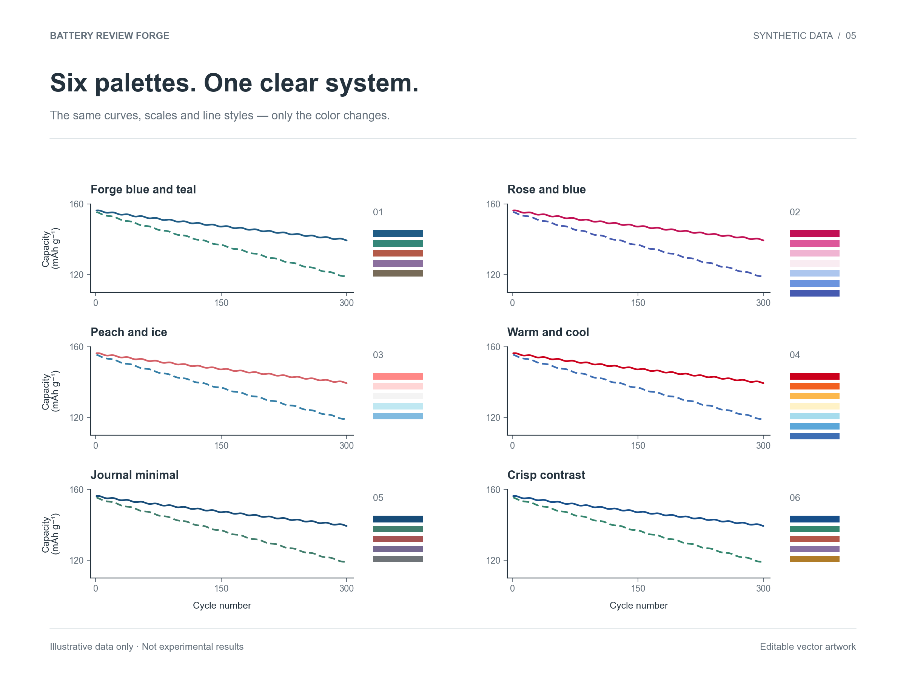

把电池数据画成论文图
核对列名、单位和测试条件，再画长循环、库伦效率、阻抗等论文图。
试着画一张免费开源 · 为电池科研而做
有数据就能画 有图片就能拼不会 Python 也没关系 从 Excel CSV 和零散图片开始 做出可编辑的论文图和整齐的 Figure

样图库
从电化学曲线到空间分布图。每张图都能打开数据与可编辑文件。
放心使用
本站不接收实验文件，也不索取 API Key。绘图脚本不会加项目水印；原始数据保持不变。在线 AI 软件的文件处理方式，请以你所用软件的设置为准。
了解数据与责任说明